SamuelSantos
Jovem Aprendiz
UX Design
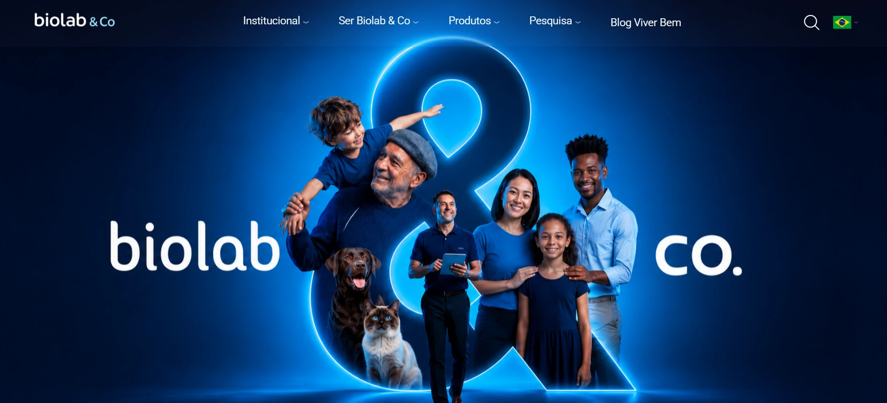
Tela inicial do redesign
Web · Projeto acadêmico individual
Biolab & Co
Redesign de um site real. O professor entregou o site de uma empresa à turma e pediu: o que melhorar e o que manter. O meu foi um dos mais elogiados, pela estética e pelo uso de IA dirigida como engenheiro de prompt, não só “pedir e colar”.
Contexto
Primeiro projeto em HTML, no segundo semestre de Desenvolvimento de Sistemas (Senai). O professor avaliou com nota 10. A Biolab é uma companhia farmacêutica, de genéricos e de produtos próprios patenteados, em saúde humana e animal.
Stack
HTML, CSS e JavaScript puro, sem nenhum framework.
- HTML
- CSS
- JavaScript
- Figma
IA, com direção
Gemini como pair programmer no código. ChatGPT nas imagens: eu montava a ideia no Figma e pedia variações, removia fundos de ícones, gerava ícones exclusivos e redesenhava as marcas.
Marcas redesenhadas
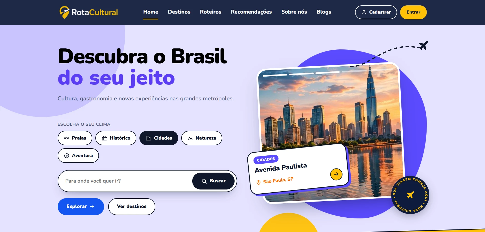
Fase 2 · nova interface, ainda em desenvolvimento
Web · Projeto acadêmico em grupo · Em desenvolvimento
Rota Cultural
Um único site para escolher o destino, os locais para visitar, onde dormir e onde comer, dando visibilidade a culturas, comércios, criadores e artistas locais. O viajante vive a viagem como um morador.
A ideia
Nasceu no segundo semestre do curso técnico do Senai. Responde o que ninguém quer descobrir só na chegada: o mercado aceita meu cartão benefício? Há posto de gasolina, hospital público ou particular e delegacia perto de onde vou ficar?
Roteiro interativo
O planejamento muda conforme o perfil: em família, com amigos, sozinho, casal, namorados ou com o pet (cachorro, gato, peixe). Foi pensado para quem não pode pagar guia turístico, sem substituir o guia.
Duas fases
Fase 1: HTML, CSS e JavaScript puro, com Figma. Fase 2: React com Vite, componentização, nova estética, mais usabilidade e telas que se explicam. Sai do visual amador para um nível profissional. Pronto no 4º semestre.
IA e tecnologias
ChatGPT como pair programmer na refatoração do HTML para React. Claude Code, Figma e Gemini na nova estética.
- HTML
- CSS
- JavaScript
- Figma
- React
- Vite
A fase 2 está em manutenção e não tem demo pública. A fase 1 está no ar para você explorar.
Ver a fase 1 no ar →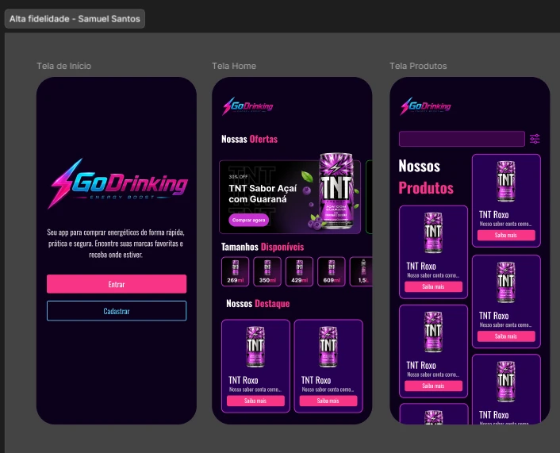
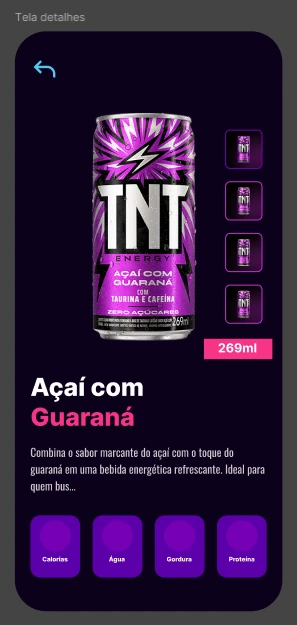
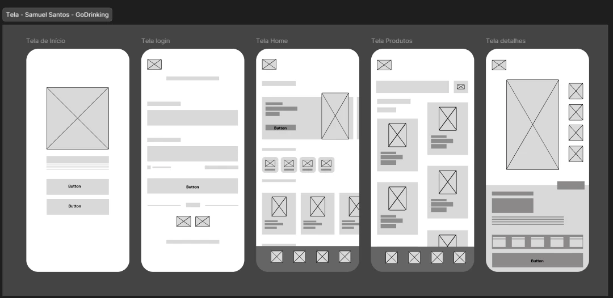
Aqui só as telas do Figma.
Mobile · Projeto em turma · React Native
GoDrinking
App de compra de energéticos de forma rápida, prática e segura. Projeto que o professor usou para ensinar React Native e que me ensinou o caminho do design: brainstorm, referências, wireframe e alta fidelidade no Figma.
O que aprendi
Fazer wireframe e brainstorm, buscar referências no Pinterest, Behance, Dribbble e Figma Community, e levar a ideia até a tela de alta fidelidade.
Tecnologias
- Figma
- React Native
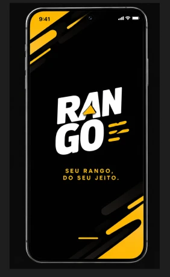
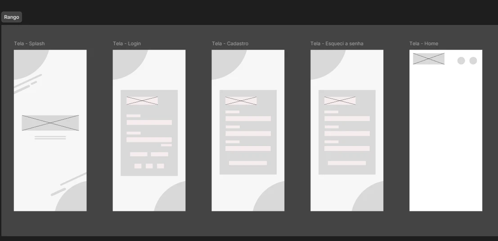
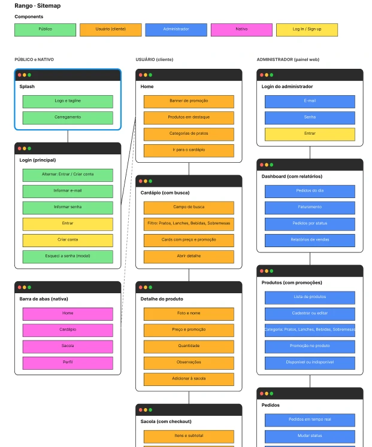
Mobile · Projeto individual · Em desenvolvimento
Rango
App de delivery para um único restaurante, com identidade amarela e preta e a tagline “Seu rango, do seu jeito.”. Wireframe, brainstorm e alta fidelidade prontos; ainda não migrado para React Native.
Em que etapa está
Etapa visual em andamento. O sitemap separa o app em público e nativo, usuário (cliente) e administrador (painel web).
Tecnologias
- Figma
- React Native (próxima etapa)
05 · Como eu trabalho
Processo e repertório
- RequisitosLevanto os requisitos e entendo a dor da pessoa/projeto.
- DadosBusco dados para entender o que o usuário precisa.
- Testes no FigmaFaço vários testes e protótipos.
- Peças de LegoAs ideias do brainstorm viram peças que eu encaixo para montar o design.
- Variações com IALevo a minha versão à IA para ver outras variações a partir dela.
- ValidaçãoMostro ao grupo ou ao líder responsável pelo projeto.
Nos quatro projetos acadêmicos que fiz até agora, professores e grupo aprovaram: dois de primeira e outros dois na segunda fase, com uma reestilização visual completa.
Prompt com método
- Zero shotPeço direto, sem exemplos.
- Follow-upRefino a resposta com novas perguntas.
- Meta promptPeço à IA para melhorar o próprio prompt.
- Role promptDefino um papel para a IA assumir.
Também uso
- Arquivo spec
Repertório visual
Sou Samuel e estou no 3º semestre do curso de Desenvolvimento de Sistemas no Senai, seguindo para front-end e UI/UX design. Meu olhar de estética vem de mais de 6 meses na mídia da igreja, editando vídeos e criando posts, e das referências que busco no Pinterest, Behance, Dribbble e Figma Community. E meu próximo objetivo academico e profissional é iniciar um curso de Design UX e UI.
Aprendo também com Gabriel Juste e com os professores Lucas Correia e Matheus Alvarez. Gosto de tons de azul-marinho, texturas com ruído e tipografia com personalidade, e procuro que cada projeto tenha identidade própria.
Tecnologias
- React
- JavaScript
- HTML5
- CSS3
- Git
- GitHub
- Notion
- Figma
- Gemini
- OpenAI
- Claude